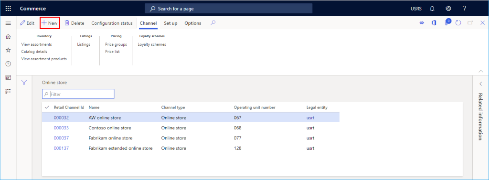
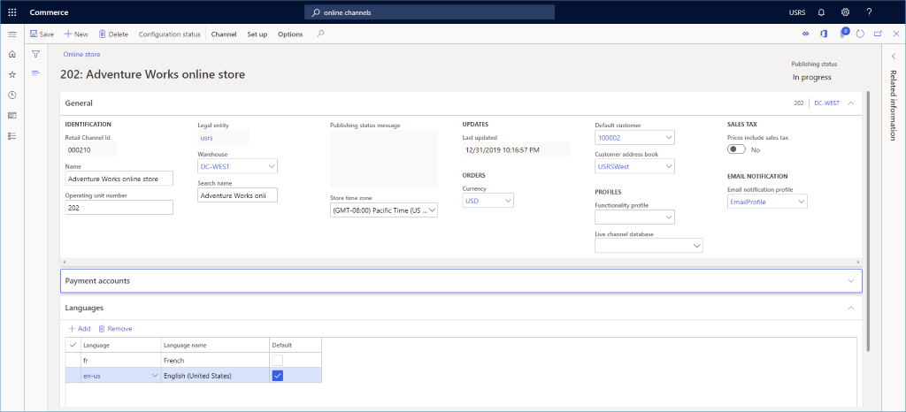
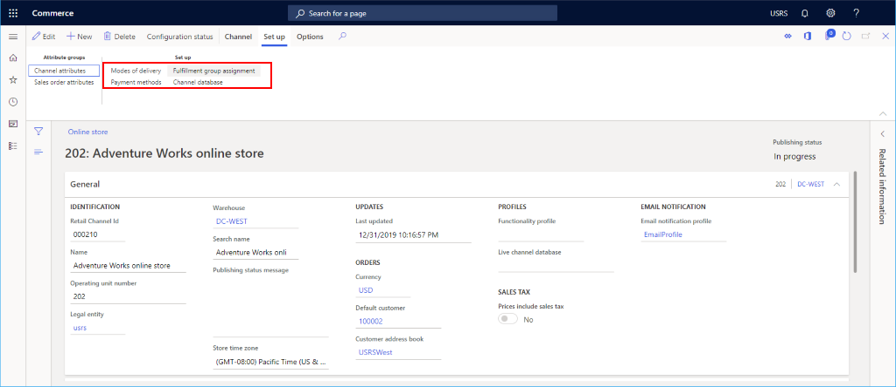
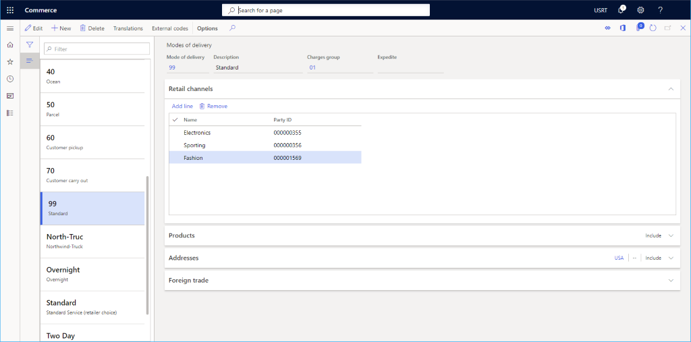
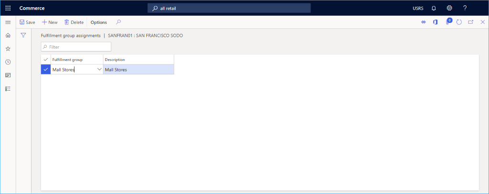

Onlinechannel einrichten
Important
Dynamics 365 Retail ist jetzt Dynamics 365 Commerce und bietet umfassende Handelsfunktionen für alle Kanäle – von E-Commerce über Shops bis hin zu Callcentern. Weitere Informationen zu diesen Änderungen finden Sie unter Microsoft Dynamics 365 Commerce.
In diesem Thema wird beschrieben, wie Sie einen neuen Onlinechannel in Microsoft Dynamics 365 Commerce erstellen.
Übersicht
Dynamics 365 Commerce unterstützt mehrere Retail Channels. Diese Vertriebskanäle umfassen Onlineshops, Callcenter und Einzelhandelsgeschäfte (auch physische Läden genannt). Onlineshops geben Kunden die Gelegenheit, Produkte über die Onlinepräsenz des Einzelhändlers sowie aus dessen Einzelhandelsgeschäften zu erwerben.
Um einen Onlineshop in Commerce zu erstellen, müssen Sie zunächst einen Onlinechannel erstellen. Vergewissern Sie sich vor dem Erstellen eines neuen Onlinechannels, dass Sie die Voraussetzungen für die Kanaleinrichtung erfüllen.
Bevor Sie eine neue Site erstellen können, muss mindestens ein Onlineshop in Commerce erstellt werden. Weitere Informationen finden Sie unter Erstellen einer E-Commerce-Webseite.
Einen neuen Onlinechannel erstellen und konfigurieren
Um einen Onlinechannel zu erstellen und zu konfigurieren, führen Sie die folgenden Schritte aus.
- Gehen Sie im Navigationsbereich zu Module > Kanäle > Onlineshops.
- Wählen Sie im Aktivitätsbereich Neu aus.
- Geben Sie im Feld Name einen Namen für den neuen Kanal ein.
- Geben Sie im Dropdown Juristische Person die entsprechende juristische Person ein.
- Geben Sie im Dropdown Lagerort den entsprechenden Lagerort ein.
- Wählen Sie im Feld Zeitzone des Shops die entsprechende Zeitzone aus.
- Wählen Sie im Feld Währung die entsprechende Währung aus.
- Geben Sie im Feld Standardkunde einen gültigen Standardkunden an.
- Geben Sie im Feld Kundenadressbuch ein gültiges Adressbuch an.
- Wählen Sie im Feld Funktionsprofil gegebenenfalls ein Funktionsprofil aus.
- Geben Sie in das Feld E-Mail-Benachrichtigungsprofil ein gültiges E-Mail-Benachrichtigungsprofil ein.
- Wählen Sie im Aktionsbereich Speichern aus.
Das folgende Bild zeigt die Erstellung eines neuen Onlinechannel.

Das folgende Bild zeigt ein Beispiel für einen Onlinechannel.

Sprachen einrichten
Wenn Ihre E-Commerce-Site mehrere Sprachen unterstützt, erweitern Sie den Abschnitt Sprachen und fügen Sie nach Bedarf weitere Sprachen hinzu.
Zahlungskonto einrichten
Aus dem Abschnitt Zahlungskonto können Sie einen Drittanbieter für Zahlungen hinzufügen. Mehr Informationen zum Einrichten eines Adyen-Zahlungskonnektors finden Sie unter Dynamics 365 Adyen-Zahlungskonnektor.
Einrichtung eines zusätzlichen Kanals
Zusätzliche Aufgaben, die für das Einrichten des Onlinechannel erforderlich sind, umfassen das Einrichten von Zahlungsmethoden, die Lieferarten und die Erfüllungsgruppenzuweisungen.
Das folgende Bild zeigt die Einrichtungsoptionen Lieferarten, Zahlungsmethoden und Zuordnung der Erfüllungsgruppen auf der Registerkarte Installieren.

Einrichten von Zahlungsmethoden
Führen Sie die folgenden Schritte aus, um die Zahlungsmethoden für jede auf diesem Kanal unterstützte Zahlungsart einzurichten.
- Wählen Sie im Aktionsbereich die Registerkarte Einrichten und dann Zahlungsmethoden.
- Wählen Sie im Aktivitätsbereich Neu aus.
- Wählen Sie im Navigationsbereich eine gewünschte Zahlungsmethode aus.
- Geben Sie im Abschnitt Allgemeines einen Operationsname an und konfigurieren Sie alle anderen gewünschten Einstellungen.
- Konfigurieren Sie ggf. zusätzliche Einstellungen für die Zahlungsart.
- Wählen Sie im Aktionsbereich Speichern aus.
Das folgende Bild zeigt ein Beispiel für eine Bargeldzahlungsmethode.

Lieferarten einrichten
Sie können die konfigurierten Zustellmodi anzeigen, indem Sie Lieferarten aus der Registerkarte Einrichten im Aktionsbereich auswählen.
Gehen Sie folgendermaßen vor, um eine Lieferart zu ändern oder hinzuzufügen.
- Gehen Sie im Navigationsbereich zu Module > Bestandsverwaltung > Lieferarten.
- Wählen Sie im Aktionsbereich Neu aus, um eine neue Lieferart zu erstellen oder wählen Sie einen vorhandenen Modus aus.
- Im Abschnitt Retail Channels wählen Sie Zeile hinzufügen aus, um den Kanal hinzuzufügen. Durch das Hinzufügen von Kanälen mithilfe von Organisationsknoten, anstatt jeden Kanal einzeln hinzuzufügen, kann das Hinzufügen von Kanälen rationalisiert werden.
Das folgende Bild zeigt ein Beispiel für eine Lieferart.

Eine Erfüllungsgruppenzuweisung einrichten
Gehen Sie zum Einrichten einer Erfüllungsgruppe folgendermaßen vor:
- Wählen Sie im Aktionsbereich die Registerkarte Einrichten und dann Erfüllungsgruppenzuweisung aus.
- Wählen Sie im Aktivitätsbereich Neu aus.
- Wählen Sie in der Dropdown-Liste Erfüllungsgruppe eine Erfüllungsgruppe aus.
- Geben Sie in der Dropdown-Liste Beschreibung eine Beschreibung ein.
- Wählen Sie im Aktionsbereich Speichern aus.
Die folgende Abbildung zeigt ein Beispiel für die Einrichtung einer Erfüllungsgruppenzuweisung.

Zusätzliche Ressourcen
Voraussetzungen der Kanaleinrichtung
Einen Retail Channel einrichten